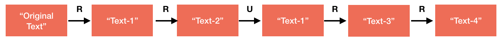
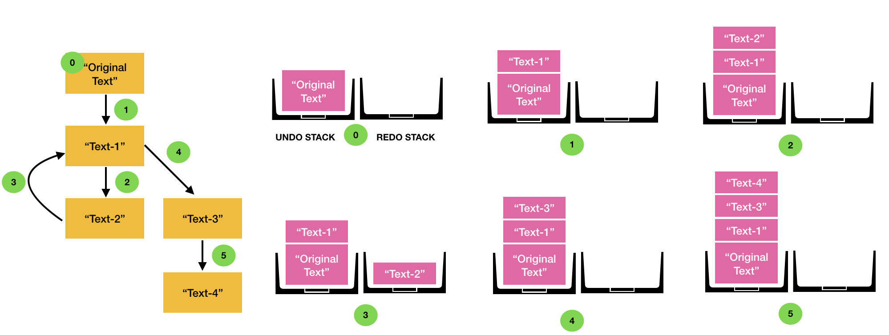
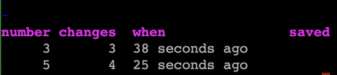

It's been three years since I began my journey with Vim. What started more as a personal challenge to master — as it was one of those things known to have a steep learning curve — has led to Vim being my editor of choice hitherto. In this post, I share some of the features that I enjoyed learning about Vim, some of which make it stand out in comparison to other editors.
Vim, which stands for Visual IMproved, is a command-line editor, originally written by Bill Joy for BSD Unix in 1976. It is highly configurable, easily integrable with compiler tools, open-source and comparatively light-weight. Vim is also one of the most widely used text editors among developers even today. The reason for this, apart from the reasons above, is that Vim is very efficient as it eliminates the latency caused due to the usage of mouse and meta-keys.
Vim Fundamentals
Vim is a modal-editor, i.e., it operates in two modes: Insert Mode, where keystrokes are
typed into the document, and Normal Mode, where all keystrokes are interpreted as commands
that act on the contents of the file. This feature has advantages in comparison to non-modal editors,
which rely only on meta keys such as Ctrl and Shift for editing. The default
mode on opening Vim is the Normal mode (or command mode). To switch to Insert mode, we press
character i, following which --INSERT-- appears at the bottom of the screen.
In order to switch back, we press the ESC key. Two additional commands that one ought to
know are :wq to save and quit and :q! to quit without
saving.
Now that we know the fundamentals, let's see some of Vim's cool features!
Undo Tree
Try the following exercise in your favourite editor — type a word, undo it, and type a different word in its place. Now, try to recover the first word that you typed. Wondering how something so simple doesn't work? This is because most editors use a stack-based undo implementation, unlike Vim that uses a tree data-structure, hence capable of saving all previous states.

Here, R: replace text and U: undo text.
To understand this, consider the series of changes shown in the figure above. Here, we consider the phrase Original Text, which undergoes two replacements (i.e., erase followed by write), one undo operation and two replacements, in that order.
The figure below shows the Vim-based tree implementation (left) and stack-based implementation of the Undo operation (right). The stack-based implementation consists of undo and redo stacks, which store all the states that can be reached by undo and redo operations, respectively. Also, the top element of the undo stack is always the state displayed on the user's screen. Let us now see how the changes shown in the above example affect the undo and redo stacks.

Left: Tree-based Undo in Vim. Right: Stack-based Undo.
Initially, only Original text is in the undo stack. On making two successive replacements, the two modified texts, Text-1 and Text-2, get pushed onto the stack, while the redo stack remains empty. The next operation performed is Undo, after which the topmost element of the Undo stack is popped, and pushed into the Redo stack. Till this point, both Vim-based undo tree as well as the stack-based undo exhibit identical behavior. However, now when Text-1 is replaced by Text-3, in the stack-based approach, the undo stack pushes Text-3 into the stack, while the redo-stack pops all its elements as there is nothing to "redo" beyond this point. This causes the loss of the element Text-2 as it is neither part of the undo nor the redo stack. Vim solves this problem by forking a new branch at Text-1, when replaced by Text-3 at Step 4. This creates two branches, consisting of edges 1,2 and 1,4,5.
In order to view the two branches in Vim, type the command :undolist in Normal
mode, which displays all the available branches for the current file. For the above example, the
output of undolist is as shown below.

Here, the most important attributes are number, which is the identifier for a branch, and
changes, which indicates the number of nodes in a given branch. Now, in order to move to the
branch containing Text-2, type the command :undo 3, where 3 indicates the branch
ID.
Composability and Homogeneity
There are plenty of commands in Vim. However, just knowing a handful of them can help realise complex
functionalities because they compose well with each other. For example, in Normal
mode, /word moves to the next occurrence of the word. When this is combined with
commands such as d or y, that are used for deleting and copying text, i.e.,
on typing d/word or y/word, Vim deletes or copies content till the
occurrence of the next word. This property where multiple commands work well in unison is what I term
composability and is common in Vim. As a programmer, one can immediately think of instances
where this can be applied. For example, we can use this to delete all contents of a function block
till the closing braces, copy the contents of an array from the beginning till the current cursor
position, and so on.
Another powerful feature of Vim is the ability to easily repeat an action multiple times. For example,
we know that i is the command to insert text. Now, what if we want to add a certain block
of text 10 times? We simply change the command to 10i, which produces an output that is
the inserted text repeated 10 times. I call this property homogeneity, inspired by the
homogeneous functions in mathematics, wherein if the input increases by a factor of k, so
does the output. The homogeneity property can be very useful if you want to paste a certain block of
code several times, to delete the next n lines, and so on.
Multiple Copy Buffers
Vim supports up to 26 registers (one corresponding to each alphabet) which act as buffers that can
store copied data, and multiple of these can be populated at the same time. For instance, in order to
copy the current line into the named register a, one types the command "ayy,
where "a specifies the register to be used and yy is the command to copy the
current line. One can also append data to this register by using the capital letter A, instead
of a. Similarly, to paste the contents, we type "ap in Normal mode. In
contrast to this, most editors can store only one item in the copy buffer (or clipboard). This feature
in Vim can be useful when multiple parts of a code need to be copied and written into other files.
Commonly used Commands
Here I list some of the Vim commands that I use often. If you're a Vim user too, share yours in the comments section below!
| Command | What it does |
|---|---|
. | Repeat the previous command |
* | Search for the word under the cursor |
:n1 | Go to line number n1 |
:n1,n2> | Right-shift all lines from n1 to n2 by a tab space |
daw | Delete a word under the cursor |
di" (or di{) | Delete all contents within a pair of quotes (braces) |
:.,.+4s/find/repl/g | Substitute all strings find with repl from the current line until the fourth line below |